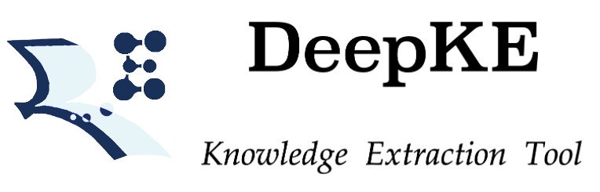

DeepKE Documentation¶
Introduction¶
DeepKE is a knowledge extraction toolkit supporting low-resource and document-level scenarios. It provides three functions based PyTorch, including Named Entity Recognition, Relation Extraciton and Attribute Extraction. DeepKE implements various information extraction tasks, including named entity recognition, relation extraction and attribute extraction. With a unified framework, DeepKE allows developers and researchers to customize datasets and models to extract information from unstructured texts according to their requirements. Specifically, DeepKE not only provides various functional modules and model implementation for different functions and scenarios but also organizes all components by consistent frameworks to maintain sufficient modularity and extensibility. Moreover, DeepKE has quipped with comprehensive documents as well as Google Colab tutorials for beginners. Users can install DeepKE via ‘pip install deepke’. We will provide maintenance to meet new requests, add new tasks, and fix bugs in the future.
If you find OpenPrompt useful, please kindly cite our paper.
@article{Zhang_DeepKE_A_Deep_2022,
author = {Zhang, Ningyu and Xu, Xin and Tao, Liankuan and Yu, Haiyang and Ye, Hongbin and Xie, Xin and Chen, Xiang and Li, Zhoubo and Li, Lei and Liang, Xiaozhuan and Yao, Yunzhi and Deng, Shumin and Zhang, Zhenru and Tan, Chuanqi and Huang, Fei and Zheng, Guozhou and Chen, Huajun},
journal = {http://arxiv.org/abs/2201.03335},
title = {{DeepKE: A Deep Learning Based Knowledge Extraction Toolkit for Knowledge Base Population}},
year = {2022}
}

Support Weight & Biases¶

To achieve automatic hyper-parameters fine-tuning, DeepKE adopts Weight & Biases, a machine learning toolkit for developers to build better models faster. With this toolkit, DeepKE can visualize results and tune hyper-parameters better automatically. The example running files for all functions in the repository support the toolkit and researchers are able to modify the metrics and hyper-parameter configuration as needed. The detailed usage of this toolkit refers to the official document
Support Notebook Tutorials¶
We provide Google Colab tutorials and jupyter notebooks in the github repository as example implementation of every functions in different scenarios. These tutorials can be run directly and lead developers and researchers to have a whole picture of DeepKE’s application methods.
You can go colab directly: https://colab.research.google.com/drive/1cM-zbLhEHkje54P0IZENrfe4HaXwZxZc?usp=sharing